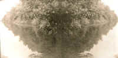

<!DOCTYPE HTML PUBLIC "-//W3C//DTD HTML 4.01 Transitional//EN"        "http://www.w3.org/TR/html4/loose.dtd">
<html lang="en">

<head>
<title>Michael Taylor:&nbsp; The Caves of Neither Here Nor There - Henderson 
State University</title>
<meta http-equiv="Content-Language" content="en-us">
<meta http-equiv="Content-Type" content="text/html; charset=windows-1252">
<meta name="GENERATOR" content="Microsoft FrontPage 5.0">
<meta name="ProgId" content="FrontPage.Editor.Document">
<meta name="copyright" content="Copyright © 2002 Henderson State University">
<meta name="rating" content="General">
</head>

<body background="ARlogoborder.jpg" link="#006600" vlink="#006600" alink="#006600" bgcolor="#FFFFFF"><div style="background:#241b2e;color:#fff;font-family:Arial,sans-serif;font-size:13px;padding:7px 14px;text-align:center;position:relative;z-index:9999;"><a href="/books/arkansas-literary-forum" style="color:#fff;text-decoration:underline;">‚Üê Back to MarckBeggs.com</a> &nbsp;|&nbsp; <span style="opacity:.75;">Arkansas Literary Forum archive, preserved as originally published</span></div>

<div align="right">
  <table border="0" width="85%">
    <tr>
      <td width="100%" align="left">
        <div class="Section1">
          <blockquote>
          <p class="MsoNormal"><b><span style="font-size:18.0pt;mso-bidi-font-size:10.0pt;
font-family:Arial"><font color="#006600">Michael Ray Taylor<o:p>
          </o:p>
          </font>
          </span></b></p>
          </blockquote>
          <p class="MsoNormal"><b><font size="4">The Caves of Neither Here Nor There<o:p>
          </o:p>
          </font>
          </b></p>
          <p class="MsoNormal"><b><font size="7"><a href="images/porterfieldJ4.jpg">
          </a></font><font color="#006600" size="5">A</font></b>n experiment reported in the January 20 issue of
          <i style="mso-bidi-font-style:normal">Nature</i> offers the latest in
          a series of recent scientific efforts to produce ìspooky action at a
          distance.î<span style="mso-spacerun: yes"> </span>Albert
          Einstein first coined the phrase in his attempt to denigrate one
          unavoidable consequence of quantum theory: Objects in a quantum state,
          the theory holds, are not ìobjectsî at all until someone or
          something measures them.<span style="mso-spacerun: yes"> </span>Photons
          and beryllium atoms and stuff are no more than percentages, fuzzy
          blobs of statistical probability, until someone looks at them and
          makes them <i style="mso-bidi-font-style:normal">real</i>.<span style="mso-spacerun:
yes"> </span>Think of the Boy and the Velveteen Rabbit.<span style="mso-spacerun: yes">
          </span>Yet if one accepts that this notion describes how the universe
          actually works, as Max Planck and other contemporaries of Einstein
          argued, one must also accept that two or more entangled particles,
          identical not-yet-objectsótwin unloved bunnies, if I may extend an
          unfortunately cute metaphor, sent hopping down disparate pathsówill
          remain mere sets of probability until one is measured.<span style="mso-spacerun: yes">
          </span>At that moment the object becomes fixed in reality, and its
          distant twin simultaneously conforms to the measured value.<span style="mso-spacerun: yes">
          </span>Einstein didnít like this.<span style="mso-spacerun: yes">
          </span>He called it spooky.</p>
          <p class="MsoNormal">In the experiment
          reported in <i style="mso-bidi-font-style:normal">Nature</i>, David
          Wineland and fellow researchers at the National Institute of Standards
          in Boulder, Colorado, caused a single beryllium atom in a vacuum to be
          in two places at the same time.<span style="mso-spacerun: yes"> </span>After
          isolating the atom from heat, radio waves and other energy sources,
          Winelandís team zapped it with a laser in a way that forced the
          atomís single electron into two states of spin.<span style="mso-spacerun: yes">
          </span>Since the state of spin determined the atomís whereabouts, it
          simultaneously existed in two places at once.<span style="mso-spacerun: yes">
          </span>Spooky.<span style="mso-spacerun: yes"> </span>As soon as
          any kind of contact with the outside world was introduced to the atom,
          its quantum state ìcollapsedî and it became located in only one
          spot.<span style="mso-spacerun: yes"> </span>The actions of the
          observer determined where the atom wound up, and this process could be
          reversed; that is, undo the observation, and the atom jumped back to
          being neither here nor there.</p>
          <p class="MsoNormal">In an experiment
          performed in 1997 at the University of Geneva, Dr. Nicholas Gisin sent
          a pair of entangled photons down separate fiber-optic telephone lines
          toward destinations ten kilometers apart.<span style="mso-spacerun: yes">
          </span>Along the way the photons were forced to make random choices
          between different, equally possible pathways, each of which would
          impart a measurable characteristic to the individual particle. At the
          end of the two lines were measuring devices.<span style="mso-spacerun: yes">
          </span>In every case, measurement at one end forced the photon
          arriving at the other end to have made the same apparently random
          choices.<span style="mso-spacerun: yes"> </span>I am not
          committing an error of verb tense.<span style="mso-spacerun: yes">
          </span>No choices were made by the unmeasured particle in actual time;
          rather, they were forced by the act of measurement<i style="mso-bidi-font-style:normal">
          to</i> <i style="mso-bidi-font-style:
normal">have previously occurred</i>.<span style="mso-spacerun: yes">
          </span>Spooky.</p>
          <p class="MsoNormal">In separate experiments
          conducted the same year in Austria and Italy, individual photons were
          destroyed and exact, paired replicas made to appear about three feet
          away.<span style="mso-spacerun: yes"> </span>In reporting
          these, some press accounts compared the effect to that of a ìStar
          Trekî transporter beam, quoting scientists who said the same result
          could indeed be achieved with larger objects, at least in theory.<span style="mso-spacerun: yes">
          </span>Meanwhile, at MIT, physicist David Pritchard built a machine
          that could revert a single, measured sodium atom to its fuzzy, unreal
          wave state, send the atomic wave through assorted grids, and then
          reassemble it as the same measured and very real piece of stuff on the
          other side.<span style="mso-spacerun: yes"> </span>Spooky again.</p>
          <p class="MsoNormal">Enough of that.<span style="mso-spacerun: yes">
          </span>Iím a journalist and a writer and donít particularly care
          about particle physics, except as metaphor.<span style="mso-spacerun:
yes"> </span>Metaphorically speaking, contemporary society seems to have
          accepted journalists as reliable measurement devices.<span style="mso-spacerun:
yes"> </span>They pay us to perform spooky action at a distance.<span style="mso-spacerun: yes">
          </span>Metaphorically speaking, nothing exists until some journalist
          observes it, at which point all other journalists simultaneously
          observe the reality of whatever the thing is (Mad Cow Disease, sheep
          cloning, etc.) to have previously occurred.<span style="mso-spacerun:
yes"> </span>The trick for any particular journalist-as-photon-measurer is
          to find a meaty subject still in its wave state, a set of
          probabilities not yet frozen into reality by some other damn reporter.</p>
          <p class="MsoNormal">By lucky circumstance,
          my hobby has prepared me for doing just that: I explore caves.<span class="MsoEndnoteReference">
          <a style="mso-endnote-id:edn1" href="#_edn1" name="_ednref1" title><span style="mso-special-character:footnote">[i]</span></a></span>
          Mountain climbers scale a peak ìbecause itís there,î but we
          cavers continually put ourselves at risk seeking places which have,
          much like a particle in the wave state or Gertrude Steinís Oakland,
          no there thereónone, at least, until we slither through a crack and
          survey a newfound cavernís thereness.<span style="mso-spacerun: yes">
          </span>We dream of breaking into bejeweled cathedrals beneath
          mountains of limestone, places virgin still to light and humanity.<span style="mso-spacerun: yes">
          </span>Sometimes, with extreme effort, we find our dreams.<span style="mso-spacerun: yes">
          </span>This can make cavers spooky to be around.<span style="mso-spacerun: yes">
          </span>Or so says my wife.</p>
          <p class="MsoNormal">In 1982 Donald Davis, a
          respected caver and the author of a number of significant papers
          concerning cave geology and mineralogy, codified this spookiness in a
          masterpiece of spurious science.<span style="mso-spacerun: yes">
          </span>ìThe Dilation Theory of Cavern Developmentî has been
          reprinted in several American caving periodicals and translated for
          German, Swiss and Norwegian caving audiences; it has become the most
          far-reaching work of a distinguished (and otherwise legit)
          speleological career.<span style="mso-spacerun: yes"> </span>Davis
          begins by proposing ìthat all previous investigators have been
          grossly in error in treating caves as geologic or hydrologic
          phenomena.î<span style="mso-spacerun: yes"> </span>Instead, he
          suggests, ìthe mechanism of cave creation is parapsychological, or
          more explicitly, psychokinetic.î<span style="mso-spacerun: yes">
          </span>He continues:</p>
        </div>
        <blockquote>
        <p class="MsoNormal"><font face="Times New Roman">My
        own recognition of this fact occurred during a trip with two
        geologist-cavers in the Grand Canyon.<span style="mso-spacerun:
yes"> </span>They were mapping a measured section through the Redwall
        limestone cliff along a steep fault ravine, while I was leading,
        deliberately examining the walls for caves.<span style="mso-spacerun: yes">
        </span>None of us saw any caves during the descent.<span style="mso-spacerun: yes">
        </span>On returning up the route, we again saw no caves until the last
        man suddenly saw to his left, 20 feet away and in plain sight, an
        entrance ten feet square behind a Douglas-fir trunk.<span style="mso-spacerun: yes">
        </span>It led to a cave with 2000 feet of passage.<span style="mso-spacerun: yes">
        </span>It had obviously dilated, or blinked into existence, at that
        final moment when the mental force of our partyís attention to the
        matter had built up to the intensity necessary to create the cave.<o:p>&nbsp;&nbsp;&nbsp;&nbsp;&nbsp;</font></p>
        <o:p>
        <p class="MsoNormal"><font face="Times New Roman">Cave
        dilation evidently operates according to quantum-mechanical laws
        in which the cave flips instantly from ìoffî to ìonî when the
        threshold energy input has been reached, with no intermediate state.<span style="mso-spacerun: yes">
        </span>This is why no one sees caves opening slowly as they watch.<span style="mso-spacerun: yes">
        </span>Since it is well known that psychokinetic forces operate
        independently of the inverse-square law that governs normal
        physical interactions, most caves will be dilated at distances out of
        sight of the creators, and the caves will appear to have been there for
        much longer than they really have.<o:p>
        </o:p>
        </font></p>
        </blockquote>
        <p class="MsoNormal"><o:p>
        After providing an example of another Colorado cave
        unquestionably created through dilation, the author proposes an
        operative mechanism:
        </p>
        <blockquote>
        <p class="MsoNormal"><o:p><font face="Times New Roman">Most
        caves are found in limestone, dolomite and gypsum because these rocks
        are associated with barren and unproductive landscapes whose inhabitants
        had little to entertain themselves but to relieve their boredom
        unconsciously by creating cavities underground.<span style="mso-spacerun: yes">
        </span>Once begun, the trend was self-accelerating by suggestion
        to others.<span style="mso-spacerun:
yes"> </span>When scientists then developed a wrong but superficially
        plausible explanation that water action caused the cavities, then caves
        dilated later (or even earlier, since psychokinesis may incorporate
        precognition) would tend to take on the features expectedóa
        self-fulfilling prophecy.<a style="mso-endnote-id:edn2" href="#_edn2" name="_ednref2" title><span style="mso-special-character:footnote" class="MsoEndnoteReference">[ii]</span></a><o:p>
        </o:p>
        </font>
        </p>
        </blockquote>
        <p class="MsoNormal">The text continues in this wonderful vein,
        concluding with ìCautionary Notesî regarding the potential of
        widespread dilation research to precipitate black holes, by creating
        cave space which exceeds the volume of the planet.</p>
        <p class="MsoNormal">Anyone who has done much caving recognizes the experience Davis
        describesóthe cave that appears in plain sight only at the end of a
        long day spent looking for it, during which you passed the ìobviousî
        entrance several times.<span style="mso-spacerun: yes"> </span>And
        Iíve experienced and heard many others describe an oft-proven
        corollary for major expeditions to large caves in foreign lands.<span style="mso-spacerun: yes">
        </span>On the last day of a big trip, as unwashed explorers contemplate
        the return to jobs, spouses, running water, etc., someone in the team
        will find a new passage leading in an unexpected direction, an immense
        borehole inevitably broken after a short distance by a vertical drop.<span style="mso-spacerun: yes">
        </span>This pit will prove deeper than the longest rope available,
        insuring that the new passage will remain unexplored until some future
        expedition.<span style="mso-spacerun: yes"> </span>The last-day
        pit is virtually assured in those cases when there have been no other
        major finds during the course of a lengthy and difficult trip,
        especially to equatorial jungles.</p>
        <p class="MsoNormal">Perhaps the most significant American cave explored recent
        decades is Lechuguilla, located in Carlsbad Caverns National Park in
        southern New Mexico.<span style="mso-spacerun: yes"> </span>The
        cave has grown from a known length of a few hundred feet in 1986 to over
        100 miles today, and grows longer with every expedition.<span style="mso-spacerun: yes">
        </span>It is an ideal candidate for having been dilated into existence,
        not in the least because Donald Davis has been one of its principal
        explorers.<span style="mso-spacerun: yes"> </span>(Those who
        have been there with Donald tell me that he will sometimes enter a
        newfound chamber and say in a demanding tone, ìDilate spaciouslyî;
        the cave often complies.)<span style="mso-spacerun: yes"> </span>Lechuguillaís
        single natural entrance was first observed in 1914 by John Ogle, a miner
        of bat guano who undoubtedly found himself inhabiting the barren and
        unproductive landscape with little to entertain himself.<span style="mso-spacerun: yes">
        </span>A shaft about 70 feet deep led to a pile of rocks from which a
        strong wind issued.<span style="mso-spacerun: yes"> </span>In the
        early 1980s, a group of Colorado cavers became convinced that the source
        of the breeze was some vast unexplored cavern, and set about digging
        their way into it.</p>
        <p class="MsoNormal">Over the course of several years, assorted small groups spent
        weekends poking at the rubble, and in 1986 a particularly determined
        party of four punched through to unknown miles of highly decorated cave
        passage.<span style="mso-spacerun:
yes"> </span>Because of the meandering nature of the cave tunnels,
        along with unusually high concentrations of gypsum and other minerals,
        Donald Davis and other speleologists concluded that Lechuguilla had been
        formed not by surface runoff, as was usually the case with limestone
        caves.<span style="mso-spacerun:
yes"> </span>Instead, they posited that the cave appeared to have been
        carved from the bottom up, by rising springs rich in hydrogen sulfide,
        which could react chemically to form sulfuric acid and dissolve rock at
        a rapid rate.</p>
        <p class="MsoNormal">In the early 1990s, this
        theory attracted microbiologists to the cave. Other deep, dark
        environments rich in hydrogen-sulfide, such as mid-ocean volcanic vents,
        had proven to contain treasure troves of odd bacteria that drew energy
        from chemicals in rocks.<span style="mso-spacerun: yes"> </span>The
        life in these ìextremeî environments was built around a chemical
        food chainóas opposed to the more familiar food chain of the surface
        world, based on energy gathered from sunlight.<span style="mso-spacerun: yes">
        </span>Once again, here were a group of determined explorers looking for
        a thing unknown to science, yet a thing they could expect to find
        according to a reasonable, if novel, scientific theory.<span style="mso-spacerun: yes">
        </span>Naturally enough, they found what they sought in Lechuguilla.<span style="mso-spacerun: yes">
        </span>The cave contained thousands of species of previously
        uncatalogued microorganisms living in complex communities that redefined
        the concept of life ìas we know it.î</p>
        <p class="MsoNormal">These ecosystems attracted
        NASA investigators to Lechuguilla, astrobiologists hoping to support
        reasonable expectations for primitive life beneath the icy surface of
        Mars and other planets.<span style="mso-spacerun: yes"> </span>Inevitably,
        the new cave, the new bugs, and the NASA interest in turn attracted
        journalists, among them me.<span style="mso-spacerun: yes"> </span>In
        1996 I spent four days camped underground in Lechuguillaís nether
        reaches, assisting microbiologists in collecting rock-eating bacteria.<span style="mso-spacerun: yes">
        </span>Within a few months, I had landed a book contract and taken a
        course in microbiological lab procedures at the university where I
        teach.</p>
        <p class="MsoNormal">Tradition in American
        journalism holds that the reporter must remain detached from his
        subject, a mere observer as opposed to participant.<span style="mso-spacerun: yes">
        </span>Yet there has always been a contrary undercurrent of<span style="mso-spacerun: yes">
        </span>ìparticipatory journalism,î in which one does something
        exciting and writes about it.<span style="mso-spacerun: yes"> </span>Moreover,
        quantum theory, I realizedóor perhaps I should say
        rationalizedóteaches us that the act of observation itself profoundly
        affects the observed phenomenon, to the point of determining its very
        reality.<span style="mso-spacerun: yes"> </span>If this is
        so, journalistic objectivity becomes illusory at best.<a style="mso-endnote-id:edn3" href="#_edn3" name="_ednref3" title><span style="mso-special-character:footnote" class="MsoEndnoteReference">[iii]</span></a></p>
        <p class="MsoNormal">To cut to the chase: I
        began looking for and finding my own cave bugs.<span style="mso-spacerun: yes">
        </span>Specifically, I became fascinated with a controversial subset of
        microbes from deep underground that had been given a different name by
        each of the three prinicpal researchers to study them: <i style="mso-bidi-font-style:
normal">nanobacteria</i>, <i style="mso-bidi-font-style:normal">nannobacteria</i>,
        and <i style="mso-bidi-font-style:normal">nanobes</i>.<span style="mso-spacerun: yes">
        </span>Until 1996, alleged discoveries of tiny bacteria up to 1/100<sup>th</sup>
        the size of more familiar microbes had been largely dismissed by the
        scientific establishment as impossible.<span style="mso-spacerun: yes">
        </span>The DNA molecule alone, the skeptics argued, was too large to fit
        in such a small packageónever mind proteins, organelles, and all the
        other stuff of life.<span style="mso-spacerun: yes"> </span>But in
        1996, a group of meteorite researchers began looking inside carbonate
        minerals (chemically much like a common cave stalactite) that appeared
        to have been deposited by groundwater inside a volcanic meteorite. In
        that the meteorite appeared to have been blasted off the surface of
        Mars, and that minerals deposited by groundwater on Earth often contain
        fossils of dead bacteria, these researchers went prospecting for
        evidence of life.<span style="mso-spacerun:
yes"> </span>Using the finest measuring devices available, they
        magnified slices of the Mars rock to powers and degrees of clarity never
        before achieved with a mineral sample.<span style="mso-spacerun: yes">
        </span>The now famousóand still widely distputedóìwormsî that
        Dave McKay of NASA and his colleagues found inside the meteorite Allen
        Hills 84001 appeared visually identical to ìnanobacteriaî claimed by
        earlier researchers.</p>
        <p class="MsoNormal">One effect of the massive
        press surrounding the controversial claims made by McKayís team has
        been a recent explosion in the scientific hunt for nanobacteria on
        Earthóin mineral deposits, seafloor sediments, industrial wastes,
        kidney stones, human arterial plaques, and a variety of other
        environments.<span style="mso-spacerun: yes"> </span>While the
        existence of these tiny life forms remains hotly debated, several
        leading scientific journals have published evidence that nanobacteria
        can be cultured or killed, contain internal cellular structures, use
        nucleic acids to reproduce, and are otherwise alive and occasionally
        virulent.<span style="mso-spacerun: yes"> </span>At the invitation
        of Carl Allen, one of McKayís colleagues at the Johnson Space Center,
        Iíve been collecting fresh hot spring mineral deposits from a wet
        tunnel beneath Hot Springs National Park.<span style="mso-spacerun: yes">
        </span>When I drove the first sample down to Houston, where it was
        placed into an electron microscope powerful enough to magnify even the
        smallest bits of reality, I saw a mass of cell-like objects as small as
        those in the Mars rock.<span style="mso-spacerun: yes"> </span>Clusters
        of rods and tiny balls were embedded in the stringy substance that
        microbiologists term <i style="mso-bidi-font-style:normal">biofilm</i>.<span style="mso-spacerun: yes">
        </span>That was in 1997; Iíve now collected possible nanobacteria
        samples as well as dozens of definite bacteria samples from caves and
        hot springs that, according to scientific publications of previous
        decades, are ìalmost completely devoid of microbial lifeî and
        ìnaturally sterile.î<span style="mso-spacerun: yes"> </span>Iíve
        collected and studied ìsnot-titesî from Cueva de Villa Luz in
        Tabasco, Mexico.<span style="mso-spacerun: yes"> </span>Gooey
        wormlike cave formations that drip pure sulfuric acid, snot-tites appear
        to be comprised of hundreds or thousands of species of interdependent
        microbes living in a biolfilm matrix.</p>
        <p class="MsoNormal">Almost every time I
        venture underground, I see new evidence of a pervasive subterranean
        biosphere extending deep into the planet.<span style="mso-spacerun: yes">
        </span>Or so says my wife, who has become increasingly suspicious of the
        things I put in our refrigerator.<span style="mso-spacerun: yes"> </span>But
        I keep bringing the stuff home.<span style="mso-spacerun: yes">
        </span>I feel like a mage who has mastered the charm of making.<span style="mso-spacerun: yes">
        </span>I placed slides yesterday morning in yet another unstudied pool,
        this one steaming into a corner of the basement in the administration
        building of Hot Springs National Park.<span style="mso-spacerun: yes">
        </span>Today nanobacteria are either growing on them or not.<span style="mso-spacerun: yes">
        </span>Or growing on them <i style="mso-bidi-font-style:normal">and</i>
        notówhatever lies there now lies within the quantum foam, part of a
        possible reality yet to be determined, possible news yet to be reported.</p>
        <div style="mso-element:endnote-list">
          <hr align="left" size="1" width="33%">
          <div style="mso-element:endnote" id="edn1">
            <p class="MsoNormal" style="margin-bottom:12.0pt;text-align:justify;text-justify:
inter-ideograph"><a style="mso-endnote-id:edn1" href="#_ednref1" name="_edn1" title></a><font size="2"><span class="MsoEndnoteReference">1&nbsp;
            </span>Like
            most members of the National Speleological Society, I prefer the
            term ìcavingî to the more recent ìspelunking,î which was
            invented by a Massachusetts bookseller in 1938, and made real when a
            journalist friend of his used the word in an article in <i style="mso-bidi-font-style:
normal">Life</i> magazine.<o:p>
            </o:p>
            </font></p>
          </div>
          <div style="mso-element:endnote" id="edn2">
            <p class="MsoEndnoteText" style="text-align:justify;text-justify:inter-ideograph"><font size="2"><a style="mso-endnote-id:edn2" href="#_ednref2" name="_edn2" title></a><span class="MsoEndnoteReference">2&nbsp;
            </span>Excerpt
            reprinted by permission of the author.</font></p>
            <p class="MsoEndnoteText" style="text-justify: inter-ideograph" align="left"><font size="2"><a style="mso-endnote-id:edn3" href="#_ednref3" name="_edn3" title></a><span class="MsoEndnoteReference">3&nbsp;
            </span>As
            a correlary in the field of literature, quantum flux might explain
            the popularity of the French school of criticism: deconstruct a text
            to its subatomic parts, and it will mean whatever you want it to
            mean.</font></p>
            <p class="MsoEndnoteText" style="text-align:justify;text-justify:inter-ideograph">&nbsp;</p>
            <p class="MsoEndnoteText" style="text-justify: inter-ideograph" align="right"><font size="2">(Photo
            by J. Porterfield)</font></p>
          </div>
        </div>
        </td>
    </tr>
  </table>
</div>

<p align="center"><a title="Select to go to the Home Page" href="2000.html">HOME</a></p>

</body>

</html>